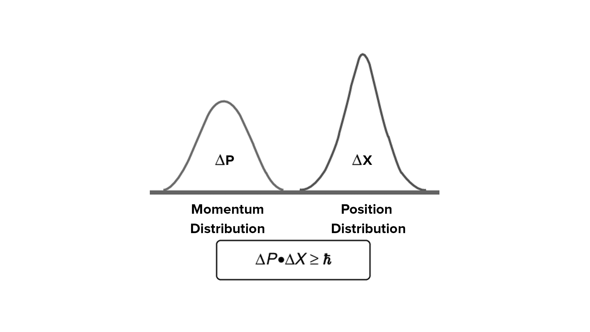

Principe d'Incertitude
Imaginez tenter de mesurer simultanément la position et la vitesse d'une balle lancée en l'air. Plus vous connaissez précisément sa position à un instant donné, moins vous pouvez connaître sa vitesse avec précision, et vice versa. C'est une illustration du principe d'incertitude d'Heisenberg, un concept fondamental de la mécanique quantique qui impose une limite fondamentale à la précision avec laquelle on peut connaître simultanément certaines propriétés physiques d'une particule.
Mathématiquement, le principe d'incertitude stipule que le produit de l'incertitude sur la position (Δx) et de l'incertitude sur la quantité de mouvement (Δp) d'une particule ne peut jamais être inférieur à une valeur constante, h/4π, où h est la constante de Planck. En d'autres termes, plus on cherche à connaître précisément la position d'une particule, moins on peut connaître sa quantité de mouvement avec précision, et vice versa.
Ce principe n'est pas une limitation due à nos instruments de mesure, mais une propriété fondamentale de la nature au niveau quantique. Il découle de la dualité onde-corpuscule et de la nature probabiliste de la mécanique quantique. Les particules quantiques ne se comportent pas comme des billes de billard parfaitement localisées, mais plutôt comme des "paquets d'onde" de probabilité. La position et la quantité de mouvement d'une particule ne sont pas des valeurs définies, mais plutôt des distributions de probabilité.
Le principe d'incertitude a des implications profondes dans de nombreux domaines de la physique et de la chimie. Il est crucial pour comprendre la structure des atomes, les propriétés des matériaux, les réactions chimiques et même les processus biologiques. Il joue également un rôle important dans l'interprétation de la mécanique quantique et dans le développement de technologies de pointe comme les lasers, les transistors et les ordinateurs quantiques.
Loin d'être un obstacle à la connaissance, le principe d'incertitude nous invite à accepter l'imprécision inhérente au monde quantique et à adopter une nouvelle perspective sur la nature de la réalité à l'échelle microscopique. Il nous ouvre la voie vers une compréhension plus profonde du monde qui nous entoure et vers des applications révolutionnaires qui façonnent notre avenir.